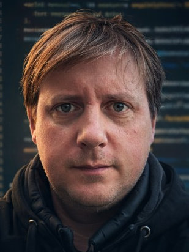
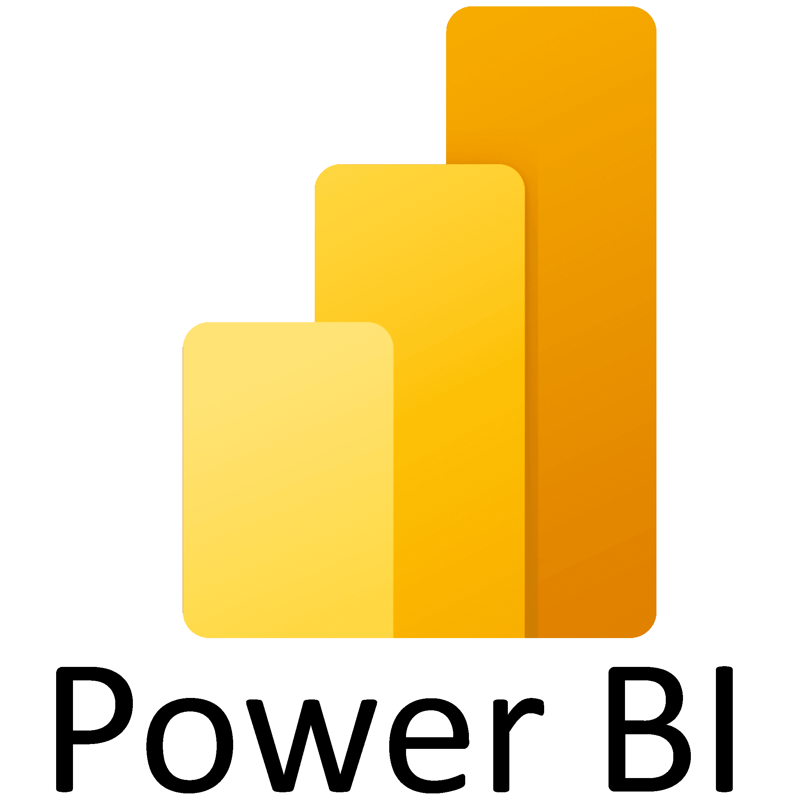
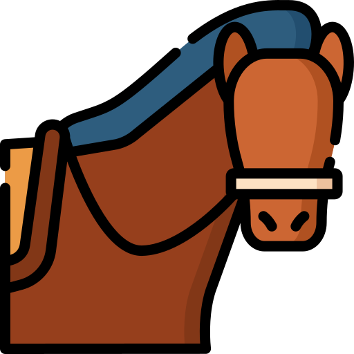
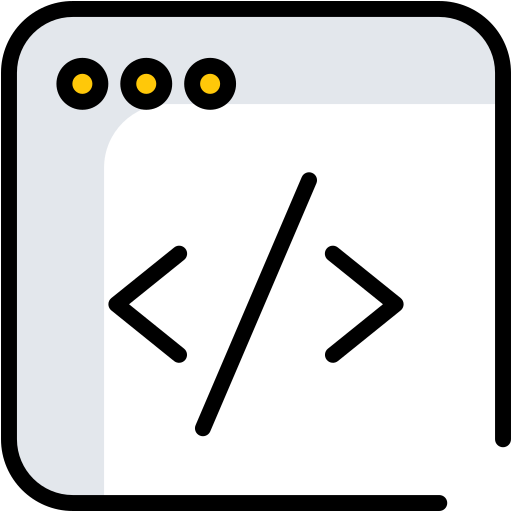
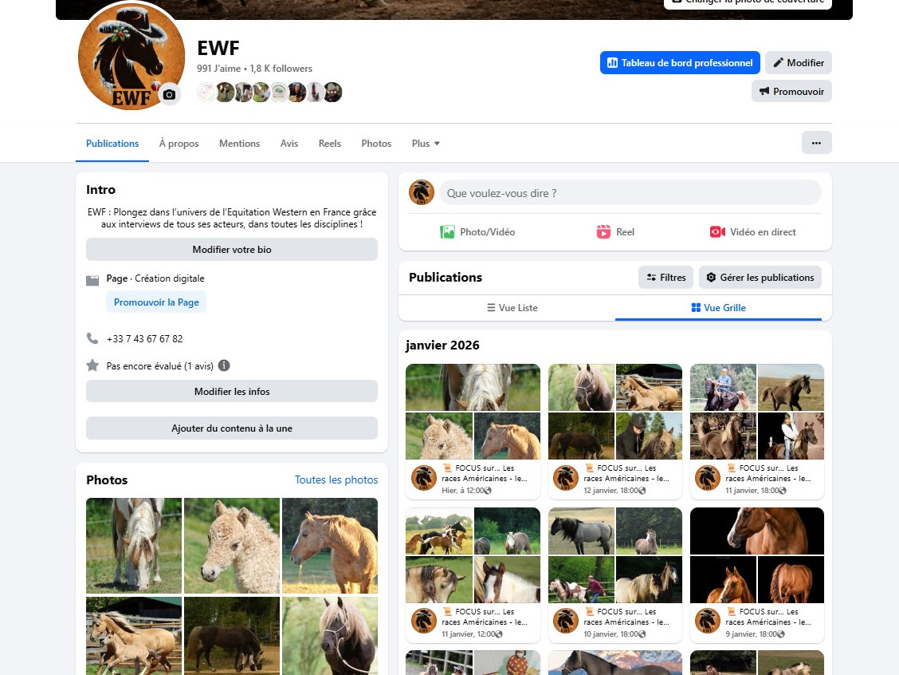
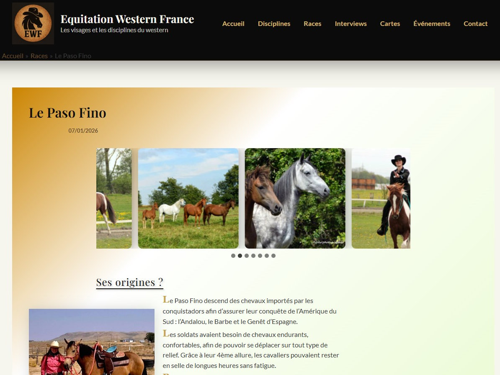

Pierre PELERIN
Développeur Full-Stack

PROFIL PERSONNEL
Passionné par les technologies et l'innovation, je me reconvertis dans le développement web après une solide expérience gestion de projets et analyse technique. Curieux et rigoureux, je mets mon expertise au service de la création de solutions digitales performantes. En formation continue sur les technologies web, je m’initie actuellement notamment sur des projets en HTML, CSS, PHP et Javascript.
EXPERIENCES PROFESSIONNELLES
Responsable Projets
- Gestion et pilotage des projets stratégiques et investissements.
- Accompagnement des équipes à l’utilisation de PowerBI et ChatGPT.
- Migration et déploiement de l’ERP Microsoft BC : lien entre l’entreprise et les développeurs, tests des nouvelles fonctionnalités.
- Mise en place d’indicateurs de suivi et de tableaux de bord décisionnels pour la direction.
Contact : Hugues Schellenberg, Directeur Général : 06 72 76 48 41 ; h.schellenberg@dollfus-muller.com.
Directeur Technique
- Supervision des départements R&D, production, logistique et informatique.
- Management d’équipes pluridisciplinaires, structuration des méthodes de travail et montée en compétences.
- Gestion des coûts, délais et qualité des projets industriels.
- Mise en place d’indicateurs de suivi et de tableaux de bord décisionnels pour la direction.
- Optimisation des processus et outils numériques.
Ingénieur R&D
- 2010 – 2017 : Support R&D pour l’entreprise.
- 2014 – 2017 : Responsable innovation.
- 2016 – 2017 : Responsable informatique.
Ingénieur R&D
Technicien R&D
FORMATION
2009 - Ingénieur Mécanique – ENSISA | Ecole Nationale Supérieure d’Ingénieurs Sud Alsace (68)
2006 - DUT Sciences et Génie des Matériaux – IUT de Mulhouse (68)
COMPETENCES
Techniques
Front-end


Intégration responsive, Flexbox, Grid, formulaires, accessibilité

DOM, événements, logique applicative, mini-applications

Personnalisation de thèmes, CSS sur mesure, structure de pages, contenus dynamiques
Back-end

Bases de la programmation serveur, formulaires, logique applicative

Requêtes simples (SELECT, INSERT), bases relationnelles
Outils et data



Transversales
- Gestion de projets et innovation
- Analyse technique et amélioration continue
- Travail en équipe et formation des collaborateurs
- Communication et vulgarisation technique
- Autonomie et sens de l’organisation
- Adaptabilité et résolution de problèmes
LANGUES
 Langue maternelle
Langue maternelle
 Intermédiaire (B2)
Intermédiaire (B2)
Notions
CENTRES D'INTERET



PROJETS & PORTFOLIO
Portfolio complet disponible sur www.pierrepelerin.fr
Gestion de la page Facebook EWF – L’Équitation Western en France
www.facebook.com/EquitationWesternFrance
- Animation d’une communauté autour de la filière équitation western.
- Création de contenus éditoriaux (interviews, actualités, mises en avant de professionnels).
- Planification des publications et optimisation de l’engagement.

Conception et développement du site web WordPress EWF
- Création du site (structure, ergonomie, identité visuelle).
- Intégration et personnalisation de thèmes (HTML / CSS).
- Mise en place d’un contenu dynamique (articles, catégories, taxonimies).
- Optimisation SEO de base et amélioration de la lisibilité des contenus.
